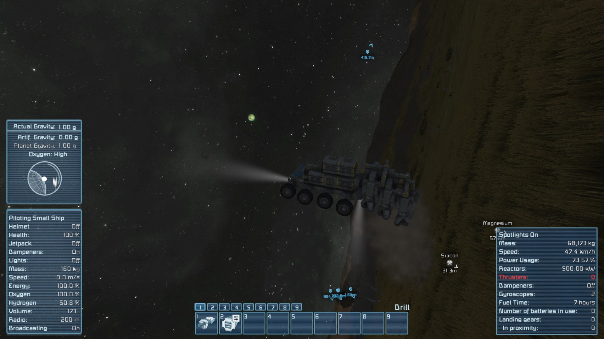

Finding The Game
My history with Space Engineers begins in May 2014, where someone gifted me a copy of the game, and I played a basic vanilla multiplayer world with a friend. At first, we were both simply doing the basic resource collection gameplay loop, having built a couple small mining ships and a large one to collect spilled ore - which was an inevitable result of mining drills back in May of 2014 - and carry it back to the base platform.He started to get bored of the game fairly quickly, but I kept playing for the next month or so, building a fleet of very large ships, some custom designs, and some made by reworking and upgrading captured cargo ships (which back then could be captured by simply moving in front of their path and waiting, since they only shot at moving objects).
Getting Into Modded
I also bored of the game after that, and went to other projects. I returned that December, playing over the winter break, and this time I started using mods to make things easier, ranging from simple things like twin grinders/welders or a larger-range ore detector, through mid-level tools like Azimuth reactors and EMP warheads, and culminating in more dramatic upgrades like the Earthbreaker drill, Titan engine, and other superlarge machinery.As it happened, an update days after I last put down the game had introduced the faction system, meaning the old "park in their path" trick stopped working to capture cargo ships. Given that I was not capable of sniping off the turrets from a distance, armor was not very helpful in protecting small interceptor ships (especially against missiles), and outright destroying the ship eliminated any point in capturing it in the first place, those EMP warheads stuck with me; they could disable the power systems on a ship without destroying the whole thing, which made capturing cargo ships so much easier and less destructive.
However, I soon bored of the game again; even the introduction of infinite asteroids that Christmas did not add much to the actual gameplay longevity.
In June of 2015 I got into the game again, this time showing it to someone else; I tried using the original modpack again, but half the mods no longer worked, and I ended up dropping them and adding a bunch of new ones as well. Among the dead mods were those warheads, something that I regretted every moment of that save.
I would end up putting the game down for almost 18 months after that, busy with a huge number of other projects, only returning in the final weeks of 2016. By this point, a lot had changed in Space Engineers; after a short-lived space-based survival, I decided to try out the recently-introduced planets in a survival world. This went poorly, due to both physics and performance issues - and the DX11 renderer overhaul update that dropped in the middle of that did the exact opposite of help.
 
As soon as I used any drill on wheels, the vehicle shot into the air, often with sufficient speed to soon crash the game.
I did continue playing, building a large surface base and collecting enough ice to get me to space, but at that point I ended up getting bored of the game yet again, having realized that there was not much new content after this point, especially given that I still could not reliably capture cargo ships - it would just be a rehash of the space campaign I had just abandoned.
Making My Own Gameplay
I returned to the game yet again the following November, and this time I was determined to make things turn out differently. I set myself the goal of not just making it to space, and playing in space, but ultimately building multi-planet infrastructure, and adding various mods to expand upon the gameplay as necessary. Firstly, I made sure that I ended up in a good starting area: Last time, I was in a random savannah, separated from the nearest lake by 20 km of forests and cliffs; this time, I would set down near enough to a lake to actually harvest its ice. Secondly, I focused more on building a proper base with processing and production infrastructure, not just an impromptu platform with a bunch of storage containers. Third, I made sure that just getting to space was not an end but a means, namely the means to acquire sufficient resource in quantity to build on a much larger scale.Fourth, I also spent time designing large self-sufficient ships to accomplish tasks like mining or mass cargo hauling, without needing to constantly return to base. I also spent a great deal of time making these actually interesting, with a maze of rooms and hardware, rather than simple cuboids packed full of machinery in vast open halls.
These efforts ended up directly leading to my getting into SE modding, including complex behavioral mods, via the gateway of the programmable block and ingame script system. For my base, I ended up working on reving a few old ore processing mods I had, notably a stone crusher for rapidly converting mass quantities of stone into gravel, a uranium centrifuge, for high-yield uranium extraction, and a platinum extractor, a slow but high-yield method of converting its ore into ingots. For those large complex ships, their design lent themselves very well to air system compartmentalization and other modular control systems, leading me to write several programmable block scripts to manage such things, familiarizing me with both C# - I learned it for this - and the grid and block APIs the game uses for both ingame scripts and mods.
Chief among the expansion mods I had was the "surface occupation/atmospheric encounters" mod set, with surface, atmospheric, and space components; I still very fondly remember trying to outwit the defences in these structures in an attempt to raid them.
However, I did eventually get somewhat frustrated with how difficult and often luck-based that was, especially for ships which were often far more well-defended from all angles.
I thought back to that EMP warhead mod, and decided that with the knowledge I now had, I could - and would - create my own EMP weaponry mod. I of course immediately made it massively more complex than a simple "you can shut down things in range" functionality, with all sorts of features like block resistances and dynamic effect range.
The EMP block proved insufficient for my needs on its own - in particular, getting near enough to even use it was often still luck-based, and worse, the atmospheric ships would usually run out of fuel and crash very soon after boarding, let alone in the event of a shutdown - so I ended up creating two more blocks to help: a cloaking device, which made my ship invisible to both turrets and players, and a ownership conversion device, which when attached to the target grid would gradually take over the ownership of the blocks on it (and like the EMP, it had complex logic regarding what kind of blocks could be converted and with what efficacy, retaliation power, and more).

Well...mostly invisible.
As a result, I had an "Electronic Warfare" type mod, that I was eager to finish and release.
However, it was then that I ran into a roadblock: I could not manage to create proper block renders for my devices. Modelling in Blender was hard enough, but I could not texture them in a way that looked remotely decent, and the export system was completely nonfunctional.
As a result, I moved on to designing some custom cargo ships instead, with the intent of ultimately releasing them as a "bonus cargo ships" mod.
Release At Last
I got bored of SpaceEngineers before completing that mod - and obviously without completing Electronic Warfare, either - but when I returned to the game again, in the spring of 2019, I resumed in earnest. Spurred in part by a recent redesign of an Elite: Dangerous-themed ship from the workshop, I reloaded those three ships, improved their interiors, and designed four more, making a "variety pack" of generally-large ships that I then released. In tandem with this, I revisited those ore processing blocks I had updated in 2017, getting official permission from Hexicube for the centrifuge and stone crusher to update and re-release them (as he had largely moved on from modding SE), and adding a new "Blast Furnace" block. These four became my "Expanded Ore Processing" mod.Fixing the 2019 survival update's unintended impact on the stone crusher, where it produced more metal than gravel.
I then spent quite some time designing and building more ships, notably a custom E:D Anaconda build - once again starting with a workshop hull and gutting it in favor of much more detailed and functional interiors - and a jump gate. I also finally released the various programmable block scripts I wrote back in 2017, again after some update and cleanup.
Stripping the conda down to armor frame, to make it easier to redesign. Incomplete blocks allow seeing how many layers thick it is.
That winter, I released another version of the Anaconda - this time loaded with modded blocks and a lot more functionality - and another mod, again designed to address a gameplay headache of mine, namely mass storage of gas collected from captured ships.
Since then, things have once again kind of stagnated; I still need models to be able to release Electronic Warfare, and without some kind of releasability on the horizon my motivation to expand upon it has been rather low. I have continued to work on the other content, however; my May 2021 playthrough is resulting in significant improvements and expansions to several of the scripts and blueprints - including the release of new ones - and at the time of writing this am working on adding the long-planned uranium gasifier to Ore Processing and adding various modern tweaks to various mods.